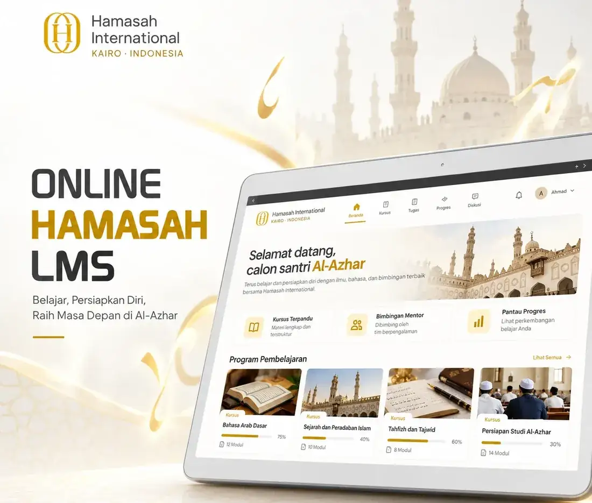

Jalur 3 · Kelas daring
Belajar ilmu alat dari rumah bersama Hamasah Courses
Platform belajar daring untuk santri, mahasiswa, dan pelajar. Kelasnya berbasis kitab rujukan, disusun dari dasar ke lanjutan, dan bisa diulang kapan saja untuk murajaah.

Kelas yang tersedia
Materinya mencakup seluruh mata pelajaran Dirasah Khassah (DK), Ma'had (I'dadi dan Tsanawi), dan kuliah tingkat 1. Empat kelas dasar berikut menjadi fondasinya.
- Nahwu dasar (Jurumiyah)Memahami struktur kalimat bahasa Arab secara sistematis dari matan Jurumiyah.
- Sharaf dasar (Bina' wa Asas)Kaidah perubahan bentuk kata sebagai fondasi membaca kitab gundul.
- Ta'lim Muta'allimAdab penuntut ilmu dari kitab karya Imam Az-Zarnuji, dibahas bertahap dan aplikatif.
- Balaghah dasarPengantar bayan, ma'ani, dan badi' untuk merasakan keindahan bahasa Arab.
Cara kelas ini disusun
Empat prinsip yang dipakai di setiap kelas, dari pemilihan kitab sampai cara mengulang materi.
Berbasis kitab rujukan
Pembelajaran disusun dari kitab mu'tabar yang sudah lama diajarkan di pesantren.
Bertahap
Materi berjalan dari dasar ke lanjutan agar pemahamannya runtut dan tidak terputus.
Menjaga adab
Bukan hanya pemahaman materi, tetapi juga adab penuntut ilmu selama proses belajar.
Bisa diulang
Materi tersimpan dan dapat diakses kembali, sehingga murajaah bisa dilakukan kapan saja.
Cocok untuk siapa
Kelas ini bisa diikuti sendiri, atau sebagai bekal sebelum mengikuti jalur kuliah dan ma'had.
- Calon santri yang sedang menyiapkan Tahdid Mustawa
- Pelajar dan mahasiswa yang ingin memperkuat ilmu alat
- Siapa pun yang ingin belajar membaca kitab dari dasar
Santri Hamasah yang sudah terdaftar mengakses kelasnya lewat portal santri.
Konsultasi gratis sebelum mendaftar
Pilih kelas di halaman Kelas, daftar akun, lalu bayar lewat transfer. Kelas terbuka di Ruang belajar setelah pembayaran dikonfirmasi.